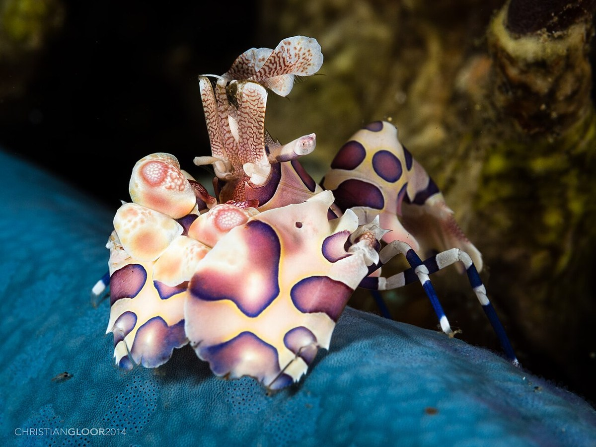
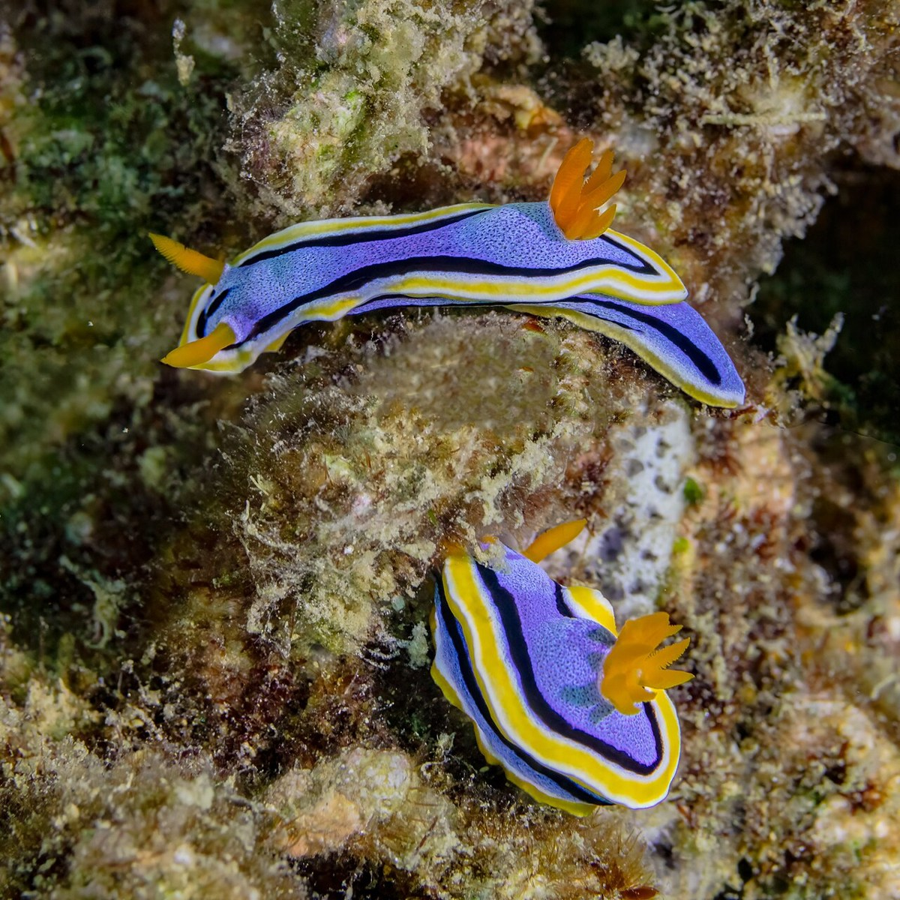
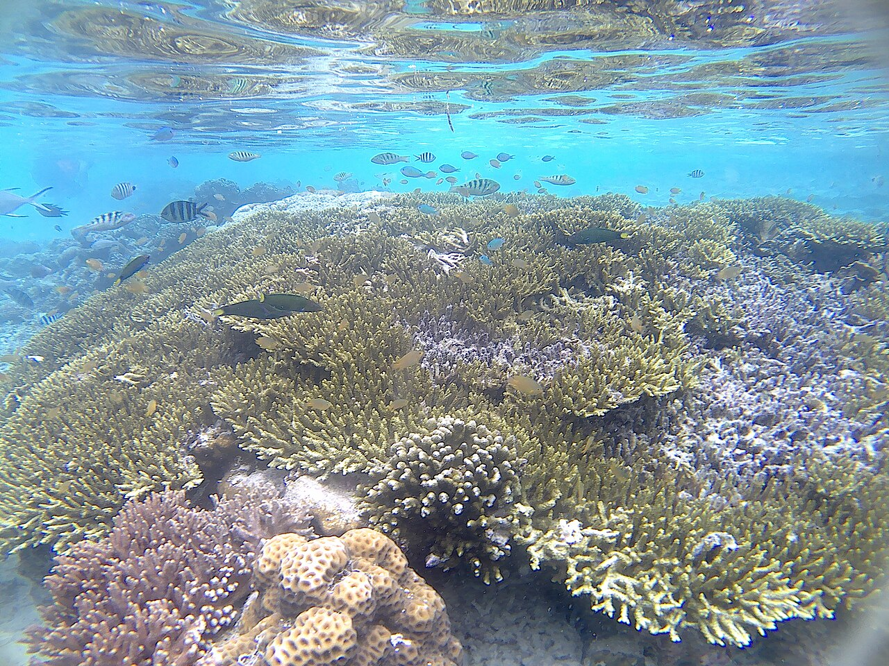

Harlequin shrimp
Photographer: Christian Gloor from Wakatobi Dive Resort, Indonesia
License: CC BY 2.0
Source: File:Hymenocera picta (14243239955).jpgResized to at most 1200 pixels, converted to display JPEG and source metadata removed; no crop or taxonomic edits. The file is copied without further image edits for this company site; the full image frame is displayed.

Sea slugs in Anilao
Photographer: Diego Delso · delso.photo
License: CC BY-SA 4.0
Source: File:Babosas de mar (Chromodoris annae), Anilao, Filipinas, 2023-08-21, DD 123-124 FS.jpgResized to at most 1200 pixels, converted to display JPEG and source metadata removed; no crop or taxonomic edits. The file is copied without further image edits for this company site; the full image frame is displayed.

Arborek Island reef, Raja Ampat
Photographer: Akbar raf
License: CC BY-SA 4.0
Source: Coral in Raja Ampat.jpgUncropped Wikimedia Commons display copy; no local crop, retouching or upscaling. Original framing preserved. The file is copied without further image edits for this company site; the full image frame is displayed.
.jpg){kind=link}
,_Anilao,_Filipinas,_2023-08-21,_DD_123-124_FS.jpg){kind=link}

Brand and typography.
The Macro Diving emblem is an existing original brand asset supplied for this project. The photographs remain the work of their credited creators; use here does not imply endorsement of Macro Diving.
Sora and Manrope fonts are distributed with their SIL Open Font License notices: Sora license and Manrope license.
Photo licenses apply to the respective images. They do not license the Macro Diving brand or imply the entire site is available under the same terms.